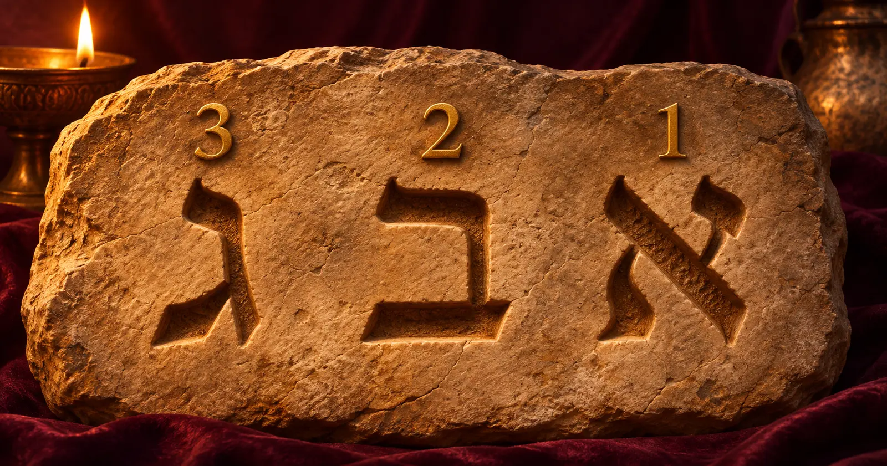

Définition
La gématrie attribue à chaque lettre de l'alphabet hébreu une valeur numérique précise, puis additionne ces valeurs pour obtenir le nombre total d'un mot. Deux mots dont les lettres totalisent le même nombre sont alors considérés comme liés par le sens, même si rien dans leur orthographe ne les rapproche. Le terme lui-même viendrait du grec geometria.
Une pratique plus vieille que l'hébreu lui-même
C'est l'un des faits les plus surprenants de cette histoire : la plus ancienne attestation connue d'un calcul de ce type n'est pas hébraïque, mais assyrienne. Une inscription du roi Sargon II, qui a régné de 727 à 707 avant notre ère, donne au mur de la ville de Khorsabad une longueur de 16 283 coudées — un chiffre choisi pour correspondre à la valeur numérique du nom du roi lui-même. L'Encyclopaedia Judaica confirme que l'attribution de valeurs numériques aux lettres était connue à la fois des Babyloniens et des Grecs, bien avant son adoption par les scribes hébreux.
Un autre exemple, venu cette fois du monde gréco-romain : les gnostiques assimilaient les noms Abraxas et Mithra, tous deux valant 365 — le nombre de jours de l'année solaire.

Comment les lettres hébraïques ont reçu leur valeur
Le système le plus courant, appelé mispar hekhrechi (valeur absolue), suit l'ordre alphabétique : aleph vaut 1, bet 2, jusqu'à yod qui vaut 10 ; puis les dizaines, de kaf (20) à qof (100) ; puis les centaines, jusqu'à tav (400). Les lettres finales peuvent reprendre la valeur de leur forme standard, ou aller de 500 à 900 selon une variante appelée mispar gadol.
Il existe aussi d'autres méthodes : la valeur ordinale (1 à 22, une par lettre), la valeur réduite (ramenée à un seul chiffre), ou la réduction intégrale, qui additionne les chiffres d'un total jusqu'à obtenir un nombre unique — par exemple, le mot hessed (bonté) totalise 72, qui se réduit à 9.
Chez les premiers rabbins : un procédé mineur
La gématrie numérique apparaît d'abord dans des textes de maîtres du 2e siècle de notre ère (les tannaïm). Quelques exemples bien documentés :
- Les 39 travaux interdits du shabbatRabbi Nathan relie l'expression « Voici les paroles » (Exode 35:1) à ce nombre précis de règles (Shabbat 70a).
- Les 318 hommes d'AbrahamUn texte ancien (la baraïta des 32 règles) remarque que le nom d'Éliézer, le serviteur d'Abraham, vaut lui aussi 318 — suggérant que lui seul, parmi les hommes mentionnés, était réellement lié à Abraham. Un chiffre qui répondait peut-être, déjà à l'époque, à une lecture chrétienne concurrente du même nombre dans l'Épître de Barnabé.
- Le vœu de naziréatSa durée, non précisée dans le texte biblique, est fixée à 30 jours en s'appuyant sur la valeur du mot « sera » (Nombres 6:5).
Un point essentiel : dans la loi juive (halakha), la gématrie n'a jamais eu qu'un rôle mineur — un indice ou un moyen mnémotechnique, jamais une preuve ou un fondement de décision à elle seule.
Comment on arrive à la Kabbale
La gématrie met des siècles à devenir un outil central. Voici les étapes principales, telles que les rapportent les sources spécialisées :
Le Sefer Yetsirah
Le plus ancien texte kabbalistique à utiliser la gématrie, surtout pour une lecture mystique de la création et des noms divins. Sa datation précise reste débattue parmi les spécialistes.
12e-13e siècle : les Hassidei Ashkenaz
Ce courant de piété mystique d'Allemagne médiévale, en particulier Éléazar de Worms, développe systématiquement la gématrie dans ses écrits sur les noms de Dieu.
Diffusion vers l'Espagne
Ces idées atteignent la Castille, où elles influencent deux figures majeures : Abraham Aboulafia, qui en fait un usage intensif, et Joseph Gikatilla, qui en fait l'un des fondements de la Kabbale.
Prudence et critiques
Toutes les grandes figures ne l'adoptent pas sans réserve : Moïse Cordovero l'utilise peu, Nahmanide met en garde contre ses excès, et des penseurs comme Abraham ibn Ezra la critiquent ouvertement.
17e siècle et au-delà
Le Megalleh Amukkot de Nathan Nata Spira devient un classique du genre. Plus tard, les disciples de Shabbetaï Tsevi s'en serviront pour justifier ses prétentions messianiques — et leurs opposants répondront par des calculs tout aussi habiles, dans l'autre sens.
Sources de cet article
Questions fréquentes
- Qu'est-ce que la gématrie ?
- C'est une méthode qui attribue une valeur numérique à chaque lettre hébraïque, pour calculer la valeur totale d'un mot et la comparer à celle d'autres mots. Le terme vient du grec geometria.
- Quelle est la plus ancienne attestation connue de ce type de calcul ?
- Une inscription du roi assyrien Sargon II (727-707 avant notre ère), qui donne au mur de Khorsabad une longueur de 16 283 coudées pour faire correspondre ce nombre à la valeur de son propre nom. Ce n'est pas hébreu, mais le même principe de base.
- Quel est le lien entre la gématrie et la Kabbale ?
- La gématrie existait dans les textes rabbiniques bien avant la Kabbale, mais elle n'était qu'un procédé mineur, une aide mnémotechnique. Ce sont les kabbalistes médiévaux, en particulier les Hassidei Ashkenaz aux 12e et 13e siècles puis des figures comme Abraham Aboulafia, qui en ont fait un outil central de lecture mystique des textes.
- La gématrie est-elle acceptée par tous les courants juifs ?
- Non. Des figures comme Nahmanide ont mis en garde contre son usage excessif, et des penseurs comme Abraham ibn Ezra ou Joseph Salomon Delmedigo l'ont critiquée. Dans la loi juive (halakha), elle reste un procédé mineur, jamais une base de décision.
Lecture historique. Cet article décrit la gématrie comme un fait culturel et religieux documenté, sans intention de promouvoir une pratique rituelle ni d'en faire une méthode de divination. La numérologie n'est pas une science : ses interprétations sont des pistes, pas des causes.